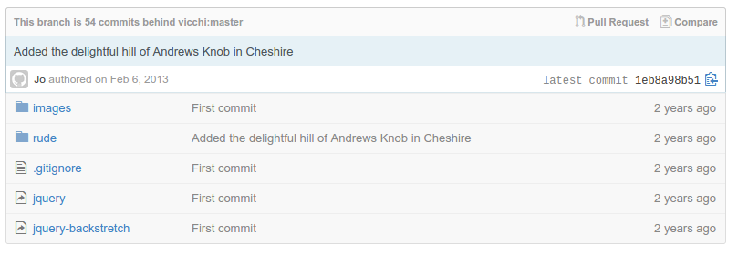

Follow along at archaeogeek.github.io/ucl_2017
Who is this person standing up here?
Who does she work for?
What do they do?
What technologies do they use?
What's our day to day work like?
What skills are important?
What's not so important?
Maths → Underwater Archaeology → Land Archaeology → Astun Technology = No qualifications in GIS!
Archaeologists have a lot of uses for GIS and generate truck-loads of data
Archaeologists have no money, so I tried open source software
but at the time, this was hard work!
...but...
This lead to an involvement with the Open Source Geospatial Foundation (OSGeo), and I spoke at FOSS4G 2007 in Victoria, British Columbia
In 2006 I set up a OSGeo:UK to promote the use of open source GIS in the UK
Stanstead 2006- our first F2F meeting
Nottingham 2013- FOSS4G in the UK!
Our primary product is a suite called iShare that allows organisations to easily add maps and other spatial content on their website
It's based on the open source stack of PostgreSQL, PostGIS, MapServer, OGR and OpenLayers
Councils, Local Authorities, Police Forces, Government Organisations, Mapping Companies...
And even build whole metadata portals
We provide data aggregation services for OS base mapping, address data, NHS Choices, EduBase, Modern Gov, police.uk...
and contribute back by committing to projects, sponsoring development, and organising conferences
As a consultant I help scope projects out, install the software, configure it, hook it up to their data, train them and troubleshoot any problems
As our metadata lead I also look after all our metadata projects and our internal metadata portal
We also have arguments about which text editor is best!
Scripting: python, bash, SQL
Version Control: Git, Mercurial
Trouble-shooting/Problem-solving
Server-based databases, a good overview of packages and formats
Standards and web-optimised formats like json
Multi-purpose libraries and languages (OGR, Python)
Self-learning
Self-motivation
Project/Task/Time Management
In-depth knowledge of a particular software package
Qualifications (sorry)
The tools work better, so now we focus on improving and monitoring their deployment and use in high-pressure enterprise environments
Both open source and proprietary GIS use python
It has modules for working with rasters, vectors, databases and many more
You WILL be able to write working code within minutes of starting to use it!
Learn about virtual environments for isolating your code
Whether it's bash, dos, powershell, OGR, SQL, learn to write scripts to do your work rather than relying on a GUI
If you have to repeat a task more than once, write a script to do it
The easiest way to learn about repositories and version control
It's not just for code- share documentation/presentations/data/your CV
Both proprietary and open source GIS companies have an increasing presence
Look at code to try and understand how things work
My first GitHub commit
It is definitely possible to make a career in open source GIS!
Open source and proprietary software are not mutually exclusive
Learning cross-platfrom tools will get you a step up, whatever area you go into
Scripting and SQL will provide a flexible and powerful alternative to desktop-GIS workflows

Find me at about.me/jocook
Find this talk at archaeogeek.github.io/ucl_2017
Find Astun at astuntechnology.com